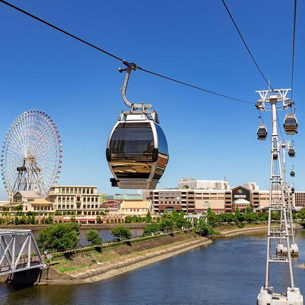

✈TSA->HND
時間: 0900-1250
CI220
從台北飛往東京，開啟精彩的冒險旅程。
CI220
從台北飛往東京，開啟精彩的冒險旅程。

電車
乘坐電車約半小時，轉車一次，大門站有電梯，轉乘輕鬆便捷！
旅館:TOSEI HOTEL COCONE
毗鄰築地市場，靠近銀座和東京，提供寬敞房型和豪華大浴場，盡享舒適。

銀座逛街
在銀座購物，探索高端精品店和當地特色商店，享受購物樂趣。

原始炭燒 いろり家
時間: 20:00-
在銀座的居酒屋享用晚餐，品味炭燒美食，僅限自由的大人。
在銀座的居酒屋享用晚餐，品味炭燒美食，僅限自由的大人。

唐吉軻德
晚上依然熱鬧，唐吉軻德大賣場應有盡有，保證低價，盡情購物！
大浴場
備有桑拿、白湯、碳酸泉、冷水池。解放奔波的雙腳，帶小孩的身心靈。
飯店早餐
享用豐富的海鮮丼和西式自助餐，種類繁多，靠近築地市場，海鮮新鮮美味，讓您自製專屬海鮮丼。

前往橫濱
神奈川 橫濱
乘坐電車前往橫濱，這裡是關東地區的繁華都市，車程約半小時，目標櫻木町。
乘坐電車前往橫濱，這裡是關東地區的繁華都市，車程約半小時，目標櫻木町。

空中纜車
乘坐纜車到達Hammerhead，欣賞橫濱美麗街景，體驗空中漫步的樂趣。

迪士尼餐廳
時間: 1200-
在迪士尼主題餐廳享用美味午餐，體驗童話般的用餐氛圍。
在迪士尼主題餐廳享用美味午餐，體驗童話般的用餐氛圍。

拉麵博物館
時間: 1400-
參觀杯麵博物館，親手製作專屬杯麵，了解杯麵的誕生歷史。
參觀杯麵博物館，親手製作專屬杯麵，了解杯麵的誕生歷史。
紅磚倉庫
在紅磚倉庫購物，探索特色店鋪，並參觀大棧橋碼頭，欣賞美麗海景。
海上巴士
時間: 1715-1735
乘船從紅磚倉庫到橫濱，欣賞海上美景，體驗浪漫航程。
乘船從紅磚倉庫到橫濱，欣賞海上美景，體驗浪漫航程。

銀座鳥真
時間: 2000-
在銀座享用高級烤雞肉串，體驗精緻美食，僅限自由的大人。
在銀座享用高級烤雞肉串，體驗精緻美食，僅限自由的大人。
東京巴士觀光
時間: 0840-
從銀座出發，乘坐Hato巴士遊覽東京塔、淺草寺和晴空塔，享受精彩的城市觀光。
從銀座出發，乘坐Hato巴士遊覽東京塔、淺草寺和晴空塔，享受精彩的城市觀光。

晴空塔
停留70分鐘
在晴空塔購物，探索特色商店和美食，享受絕佳景觀。
在晴空塔購物，探索特色商店和美食，享受絕佳景觀。
淺草寺
停留50分鐘
參觀淺草寺，感受傳統文化，探索周邊特色店家和美食。
參觀淺草寺，感受傳統文化，探索周邊特色店家和美食。
喜來登飯店
在東京灣喜來登自助餐廳享用豐盛午餐，品味多樣美食。
東京鐵塔
停留50分鐘
參觀東京塔，欣賞壯麗的城市全景，並探索塔內的特色商店和咖啡廳。
參觀東京塔，欣賞壯麗的城市全景，並探索塔內的特色商店和咖啡廳。
東京車站
時間: 1640-
結束巴士旅程，探索東京車站，欣賞壯麗建築，附近有Kitte商場和皇居，購物與歷史並存。
結束巴士旅程，探索東京車站，欣賞壯麗建築，附近有Kitte商場和皇居，購物與歷史並存。

鮨 神楽
時間: 2030-
隱藏在巷弄中的板前壽司，名店修行12年，匠心獨具，品味極致鮮味。
隱藏在巷弄中的板前壽司，名店修行12年，匠心獨具，品味極致鮮味。
明治神宮
參觀明治神宮，感受神聖氛圍，探索壯麗建築和美麗庭園。
阿佐ヶ谷
探索阿佐谷，體驗威廷與飄的日常生活，發現隱藏的特色店鋪和美食。

午餐
在山本漢堡享用美味午餐，(備案錦天,烤魚)，體驗當地特色美食。

パール商店街
在阿佐谷商店街購物，探索獨特小店和美食，感受濃厚的社區氛圍。

飄飄家
回到家中，小憩片刻，參觀未來大設計師的家，感受創意與溫馨的氛圍。

善福寺公園
參觀善福寺公園，享受自然美景與社區氛圍，體驗戶外活動的樂趣。

うしごろ焼肉 / 麻布台ヒルズ
時間: 2000-
寧寧姨姨隊探索高級商場，其他人享用頂級燒肉大餐，體驗美食與購物的雙重樂趣！
寧寧姨姨隊探索高級商場，其他人享用頂級燒肉大餐，體驗美食與購物的雙重樂趣！